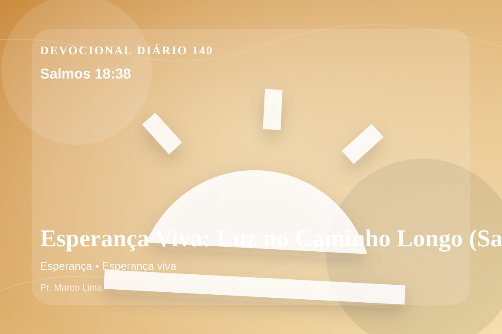

Esperança Viva: Luz no Caminho Longo (Salmos 18:38)
Eu os perfurei, que não puderam mais se levantar; caíram debaixo dos meus pés.
Pensamento
Ao voltar a este texto, perceba um detalhe prático: a fé também amadurece quando a resposta demora. Salmos 18:38 coloca diante de nós uma verdade capaz de atravessar a rotina, confrontar o coração e renovar a esperança em Deus.
Salmos 18:38 chama o coração a ouvir Deus com reverência e responder com fé prática. A Palavra não foi dada para enfeitar pensamentos religiosos, mas para conduzir pessoas reais ao Senhor.
O tema de esperança precisa ser recebido com simplicidade e seriedade. O Senhor não usa esta passagem para alimentar vaidade espiritual, mas para formar obediência sincera. A esperança cristã não é otimismo religioso, mas confiança fundamentada no caráter fiel de Deus. Ela permite atravessar a espera sem abandonar a fé, porque olha para as promessas do Senhor acima das circunstâncias.
Não transforme este devocional em informação religiosa. Pare por alguns instantes, nomeie diante de Deus aquilo que precisa mudar e peça um coração pronto para obedecer.
Arrependimento não é apenas sentir peso na consciência; é voltar-se para Deus, abandonar o caminho que entristece o Senhor e confiar que a graça de Cristo é suficiente para perdoar e transformar.
Este é o evangelho que sustenta toda aplicação: Jesus Cristo morreu pelos pecadores, ressuscitou em vitória e chama cada pessoa a responder com fé, arrependimento e uma vida rendida ao Seu senhorio.
O simples evangelho de Cristo Jesus continua sendo suficiente: arrependa-se, creia, receba perdão e caminhe em obediência pelo poder do Espírito Santo.
Não espere sentir tudo para obedecer. Comece com fidelidade no próximo passo, confiando que Deus sustenta quem responde à Sua voz.
Para Praticar Hoje
- Leia Salmos 18:38 lentamente e destaque uma palavra ou expressão central do texto.
- Confesse a Deus um pecado, resistência ou frieza espiritual que esta Palavra revelou.
- Declare sua fé em Jesus Cristo e pratique hoje uma atitude concreta de arrependimento e obediência.
Oração
Pai, a desilusão quer roubar minha alegria. Salmos 18:38 me lembra que os Teus planos são de paz. Que eu olhe para as Tuas promessas e não para as minhas circunstâncias. Que isso se torne vida em mim.
{kind=link}